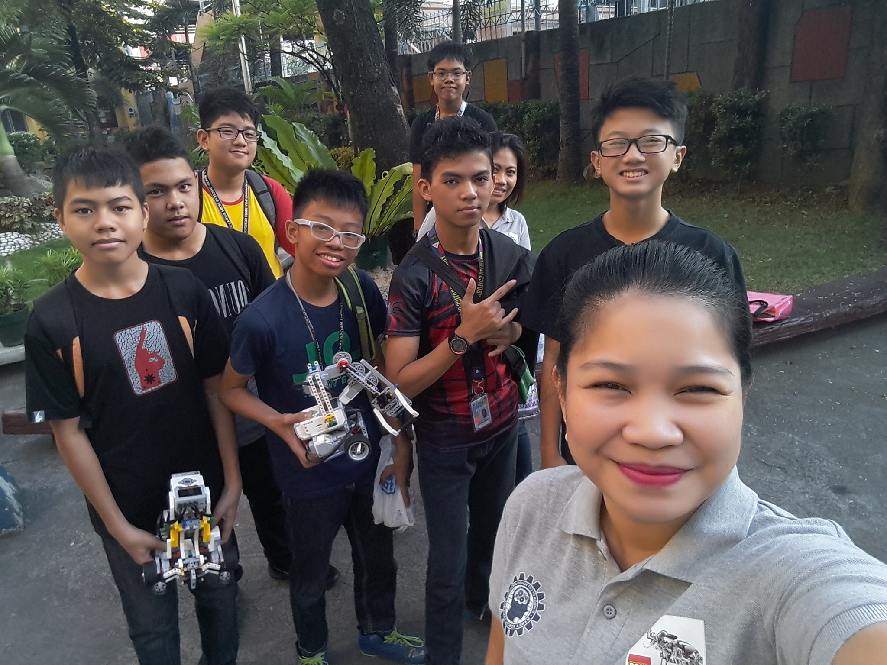

Timeline
2016
Manila Robotics Cup
School Recognition
Recognized as "Best Robotics Builder"
2017
First started learning programming
District Meet (Chess)
First place in individual rankings.
Division Meet (Chess)

Second place in individual rankings.
Became a representative of public schools in Manila.
Palarong Maynila (Chess)
Eight place among opponents from private universities, including NU, UE, Letran, AdU, and AU.
2018
Philippine Robotics Olympiad

IBM

Roleplaying as an employee at IBM.